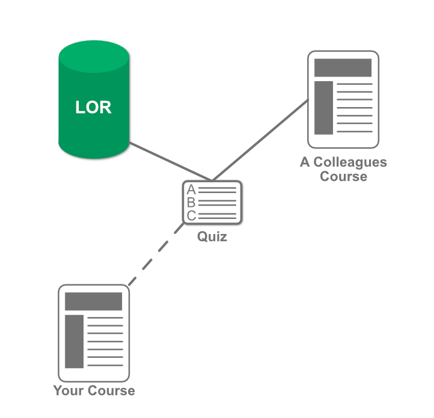

Each department at the college will have access to their own LOR. These repositories will allow departments to create and share learning objects that can be used across various courses.
For an individual instructor, this means that anyone within the department can publish a learning object to the LOR. Anyone else in the department can choose to copy that learning object into their own course. Instructors may also use the LOR to store learning objects for use across multiple courses of their own.
The LOR will also be used to replicate modules between courses. In doing this, when courses or individual learning objects are updated or changed, these changes can propagate automatically everywhere they are used.

In the graphic on the right, we have four objects: the LOR, two courses, and a quiz. In this scenario, one of your colleagues has created a quiz in his or her course. They have decided to publish the quiz to the LOR, so that others may use the quiz in their own courses.
You are in need of a quiz and decide to search the LOR for one that might meet your needs. You find the quiz that your colleague published, and decide to copy it into your course.
Having the LOR allowed you to be able to quickly find and copy content into your course without having to remake it or create it on your own.